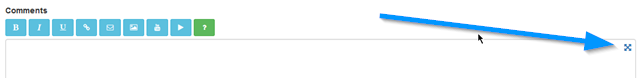
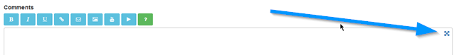
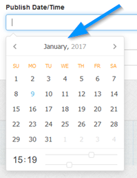
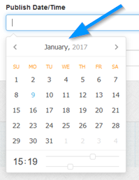
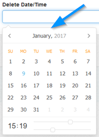
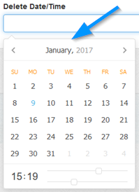

Add/Edit Journal
Overview
Enter and / or edit journal entries.
General > Title
Enter journal title.
General > Comments
Enter journal comments. You can do basic formatting via the BBcode buttons if they are enabled.

More information here.
Clicking the crosshair shows a bigger textarea. This might be useful for small devices.

More information here.
Clicking the crosshair shows a bigger textarea. This might be useful for small devices.

Meta/Cat > Category
Each journal must belong to one or more categories. Use the Ctrl key to make multiple selections.
Meta/Cat > Alternative Browser Title
Alternative journal title that appears in your address bar. This might be hidden in some browsers but can be useful for search engines when
spidering your journal. Optional. Leave blank to disable.
Meta/Cat > URL Slug
Enter search engine friendly slug for your journal. This is required (even if search engine friendly urls are off) and MUST be unique.
The ONLY characters allowed for slugs are: hyphens, underscores & alphanumeric. Anything else will be removed or ignored.
The ONLY characters allowed for slugs are: hyphens, underscores & alphanumeric. Anything else will be removed or ignored.
Meta/Cat > Search Tags (Comma Delimit)
Enter comma delimited set of search tags if required. If clicked will search other journals based on that tag. Can be useful for search engines.
Date/Time > Publish Date/Time
Enter publish date/time if required. Enter only via the calendar provided, this appears when you click in the box. Use the sliders to set time.

If no publish date is entered journal will be published immediately. Note that for future publishing, you will need to set up a cron job. More information here.

If no publish date is entered journal will be published immediately. Note that for future publishing, you will need to set up a cron job. More information here.
Date/Time > Delete Date/Time
Enter delete date/time if required. Enter only via the calendar provided, this appears when you click in the box. Use the sliders to set time.

Leave blank for no auto deletion. Note that for auto deletion, you will need to set up a cron job. More information here.

Leave blank for no auto deletion. Note that for auto deletion, you will need to set up a cron job. More information here.
Private > Username
If you want your journal to be private, enter username. You can also password protect categories, in this case, there is no need to set your journal
as private if your category is already protected. For a protected category, the category log in details take priority.
Private > Password
If you want your journal to be private, enter password. You can also password protect categories, in this case, there is no need to set your journal
as private if your category is already protected. For a protected category, the category log in details take priority.
Click the icon to auto generate secure password. If you use this option you`ll see the password preview appear above the box. Remember to make a note of it first if you need to reference it afterwards.

Click the icon to auto generate secure password. If you use this option you`ll see the password preview appear above the box. Remember to make a note of it first if you need to reference it afterwards.
Options > Enable Journal
Enable or disable journal.
Options > Enable Comments
Enable or disable comments. Maian Weblog uses the Disqus comments system. This must be enabled before you enable journal comments.
More information here.
More information here.
Options > Pin Journal
If set, this option pins your journal to the top of the page, so for any journal list pages, pinned journals always appear first. Useful for
important entries.
Tweet > Post Tweet
If available, enables you to send tweet directly to your Twitter page at the same time as posting journal. You need to make sure that the twitter settings are set up
first and you have set up Twitter api keys. More information in the social settings.
Tweets must comply with the Twitter term and conditions.
Tweets must comply with the Twitter term and conditions.